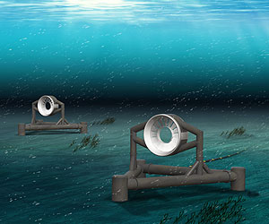
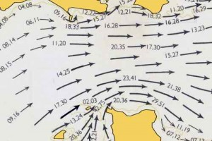

A Case Study of the Paimpol-Brehat Tidal Energy Farm
Technologies Installed:
Irish-based operators OpenHydro, a DCNS company, installed their original design tidal turbines of the coast of Brittany, France at the Paimpol-Brehat tidal farm. OpenHydro utilized its Open Centre Turbine for this location. This turbine has a 16 meter diameter and sits 35 meters below the surface of the water at the Paimpol-Brehat farm (Power-Technology 2011). The name for the turbine comes from its unique rotor design which has an open center allowing water to pass freely through the device while still maximizing energy capture. Ten rotor blades surround the open center and are retained within an outer housing. The Open Centre design aims to reduce environmental impact by allowing organisms to pass freely through the device and reducing blade strike incidents by covering the rotor blade tips. Furthermore, the rotor is relatively slow moving with a rotor speed ranging between 3-10rpm. The maximum rotor speed is 14rpm and the device is designed to rely on the pressure of water to slow the rotors; however, in some cases an electric brake can be applied and stop the rotation almost instantly (OpenHydro 2010).

Moreover, the rotor is free of lubricants which reduces the risk of spill and impact on marine life. The horizontal axis device weighs 850 tons and sits directly on the seafloor on a gravity base support. This design allows the device to be installed without any drilling. The Open Centre turbine has a nameplate capacity of 2.2 megawatts and has a power takeoff through a direct drive, permanent magnet generator (EDF 2010). OpenHydro claims that the Open Centre turbine silent and therefore has no negative noise impact on the area of its installment; however, outside studies have concluded that the turbine does indeed have a significant sound emission which is likely impactful to its surrounding environments (OpenHydro 2010).
Location and Construction:
The project was initiated in 2004 off of an island near Paimpol, France calledIle-de-Brehat. Electricite de France (EDF) took on the project, and production work began in 2008. The first turbine on the farm was installed August of 2011 and, according to EDF, when the entire project is completed it will be the world’s largest tidal array and the first grid-connected tidal energy farm. One of the driving factors behind the project’s inception was that in 2004, the last coal-mining facility in France closed, ending nearly 300 years of coal-mining (Power Technology, 2014). Both the French government and its people realized then that the need for new sources of energy was as essential as ever.
The company which is supplying the four 2-MW turbines, OpenHydro, has had similar projects in North America and the United Kingdom. The turbines have an estimated lifespan of 30 years and are able to be easily dismantled and have minimal environmental impact (EDF, Tidal turbines at Paimpol-Brehat).
Currents among the northern Brittany coasts of Paimpol and Brehat Island, which are in the English Channel, are among the strongest in Europe. When selecting the build site, EDF took into account maritime shipping routes in an attempt to limit the impact on the local economic activities. The OpenHydro turbines were selected for the project largely due to the fact that they are relatively inexpensive as the laying of the turbines underwater requires no drilling making them less labor-intensive . The turbines rest on a gravity metal base via their own weight and there is no anchorage needed for the turbines to be laid in the seabed. A cable route between the converter and the on land delivery station was modified during the conceptualization phase in order to bypass an algae deposit considered to have a high biodiversity value (Accommodating Development, EDF).

Assembly of the first turbine was done at Port Brest and then was transported to Brehat in August 2011 for a series of commissioning tests prior to installation. Eventually, the turbine dubbed L’Arcouest was installed and tested at the project site from December 2013 to April 2014 ( Power Technology, 2014) The subsea base, along with the turbine, were installed at sea using OpenHydro’s Triskell barge. One key factor in the design of these turbines is that they are deep enough that they cannot be seen from the surface, thereby creating no visual impact for the local population. In late April of 2014, after seeing the results of the initial turbine, OpenHydro and EDF agreed on a deal to supply two new turbines for the tidal farm that will be connected to the grid. The hope is that this pilot project will spark an interest in tidal farm energy and lay the groundwork for commercialization beginning in 2016 (Power Technology, 2014).
Costs and Energy Output:
The cost of initial construction for the wave farm was predicted to be around 40 million Euros. A French naval defense company, DCNS, acquired an 8 percent share of the Irish company OpenHydro for 14 million Euros in 2011 in order to diversify its portfolio of activities and to invest in potential ocean energy technologies. DCNS has said that potential gains from investment in marine renewable energy sources offer significant opportunities for long-term financial growth (DCNS, 2011). In 2013, DCNS decided to take control of OpenHydro, upping their holding to 60%. OpenHydro feel that this change could only benefit them and their efforts to install more marine energy stations (Williams, 2013).
Environmental Impact Assessment:
The French electric company EDF conducted an environmental impact assessment in 2004 before naming the Paimpol-Brehat site as their test site and later installation site; however, the explicit findings were not openly disclosed due to the fact that EDF was initially paying to use the site for experimentation. Some information from the environmental impact assessment, however, is available from companies which provided technology to assist the assessment (SETIS 2008).